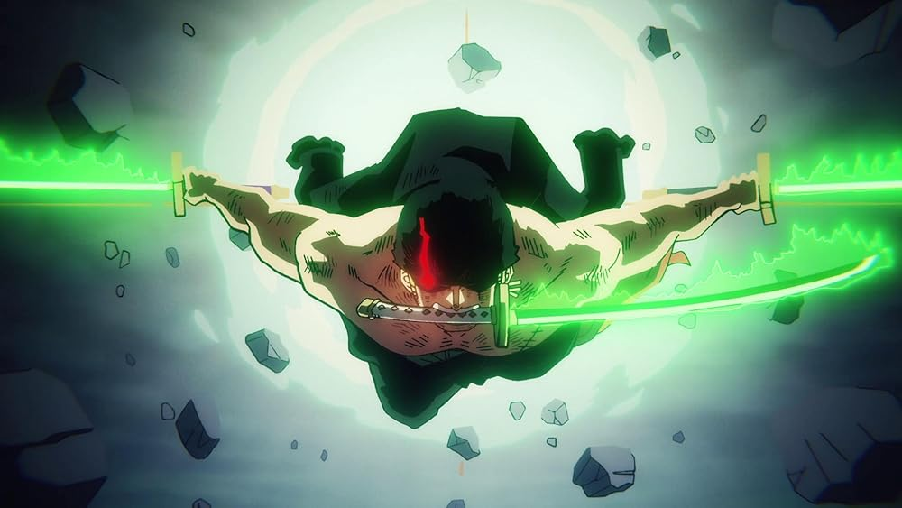
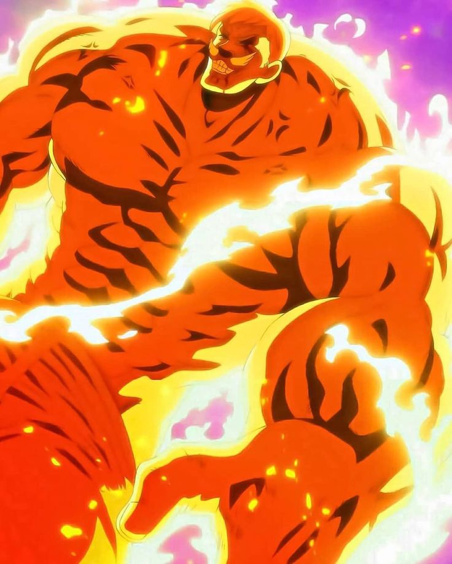

Следующий Король Пиратов
Великий Воин Освобождения
Один из Ёнко


Охотник на пиратов
Правая Рука Следующего Короля Пиратов
Король Преисподней

Грех Льва — Гордость
Наследник Силы Великого Энеля
Ныне - мёртв ☠️

| Имя | Финальная форма | Повседневный Облик | Аниме, из которого он |
|---|---|---|---|
| Monkey D Luffy Следующий Король Пиратов Великий Воин Освобождения Один из Ёнко |
|
|
One Piece |
| Roronoa Zoro Охотник на пиратов Правая Рука Следующего Короля Пиратов Король Преисподней |
 | |
One Piece |
| Эсканор Грех Льва — Гордость Наследник Силы Великого Энеля Ныне - мёртв ☠️ |
 | |
Seven Deadly Sins |